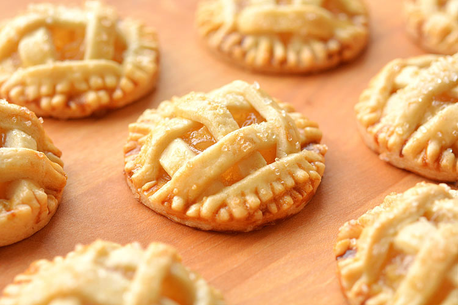

Mini Apple Pies

Description:
These little apple pies are nothing short of delicious!
Eating these will not only result in your tastebuds exploding,
you will be craving for more! A nice and simple recipe and you can have these
in no time.
Ingredients
- Pie crust
- Apple pie filling
- 1 Egg
- Coarse sugar
Steps
- Leave the frozen pie crust on the counter for
about an hour to let it defrost.
Then carefully remove it from the foil tin
and set it on the counter. Roll it with a rolling pin just enough to flatten it out.
- Use two different circle cookie cutters. One 2.5″ wide and the other 3″ wide.
Don’t worry if you don’t have circle cookie cutters.
Just use plastic cups, or even two different sizes of drinking glasses.
- Make sure your apple pie filling is chopped into small pieces
- Scoop a small amount of filling into the middle of the 2.5″ dough circles.
Make sure you leave enough space around the edges so you can seal it afterwards.
- Brush some beaten egg around the edges of each of the cookies.
- weave the lattice on top of the cookies. Then Use a fork to press down the edges all the way around the circle. If you have trouble with it sticking to the dough,
dip the fork in water every once in awhile.
- the circle isn’t exactly “circle-like” anymore.
So use the cookie cutter to clean up the edges
- Brush the top of each mini apple pie with the beaten egg,
then sprinkle some coarse sugar on top.
- Bake them at 350F for 25 to 30 minutes.